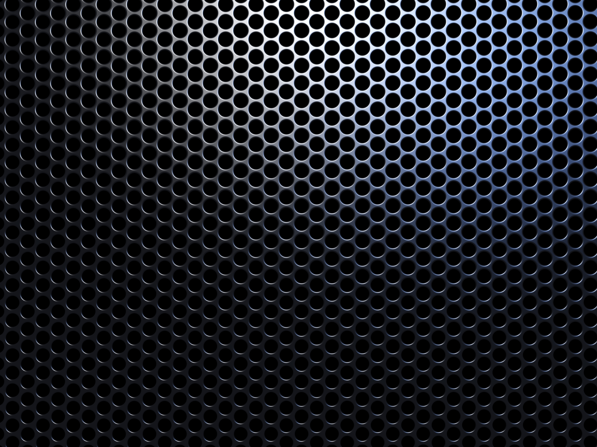

Форма тела пингвинов обтекаемая, что идеально для передвижения в воде. Мускулатура и устройство костей позволяют им под водой работать крыльями почти как винтами. В отличие от других нелетающих птиц, пингвины имеют грудину с чётко выраженным килем, к которому крепится мощная мускулатура. Плавание под водой отличается от полёта в воздухе тем, что на подъём крыла затрачивается та же энергия, что и на опускание, поскольку сопротивление воды больше, чем сопротивление воздуха, поэтому лопатки пингвинов имеют по сравнению с другими птицами бо?льшую поверхность, на которой крепится мускулатура, отвечающая за подъём крыла. Плечевая кость и кость предплечья соединены в локте прямо и неподвижно, что увеличивает стабильность крыла. Грудная мускулатура развита и составляет иногда до 30 % массы тела, что в несколько раз превышает мускулатуру самых мощных летающих птиц. Бедренные кости очень короткие, коленный сустав неподвижен, а ноги заметно смещены назад, что является причиной необычно прямой походки. Большие ступни с плавательной перепонкой сравнительно коротки — находясь на суше, животные зачастую отдыхают, стоя на пятках, при этом жёсткое хвостовое оперение служит им дополнительной опорой. Хвост пингвинов сильно укорочен, поскольку рулевую функцию, которую он обычно имеет у других водоплавающих птиц, у пингвинов выполняют в первую очередь ноги. Второе явное отличие пингвинов от других птиц — плотность костей. У всех птиц кости трубчатые, что делает их скелет легче и позволяет летать или быстро бегать, а у пингвинов они похожи на кости млекопитающих (дельфинов и тюленей) и не содержат внутренних полостей.
Г пределах своей среды обитания пингвины подвержены воздействию экстремальных климатических условий и имеют различные анатомические особенности, позволяющие им приспосабливаться к этим условиям. Для теплоизоляции служит в первую очередь толстый — от 2 до 3 см — слой жира, над которым располагаются три слоя водонепроницаемых, коротких, плотно прилегающих друг к другу и равномерно распределённых по всему телу перьев. Воздух в слоях перьев также эффективно защищает от потери тепла при нахождении в воде. У пингвинов имеется хорошо развитая «система теплопередачи» в плавниках и ногах: поступающая в них артериальная кровь отдаёт тепло более холодной венозной крови, оттекающей обратно к телу, таким образом теплопотери сводятся к минимуму. Этот процесс называется «принцип обратного потока».
Многочисленные мелкие, недифференцированные, похожие скорее на волоски перья, из которых состоит оперение, почти у всех видов пингвинов имеют на спине серовато-голубой, переходящий в чёрный оттенок, а на животе белые. Такая окраска является маскировочной для многих морских животных. Оперение детёнышей чаще серое или коричневое, однако у некоторых видов бока и живот имеют белый окрас. По окончании высиживания яиц и выращивания птенцов у пингвинов начинается смена оперения. Во время линьки пингвины сбрасывают большое количество перьев одновременно и на это время не способны плавать в воде и остаются без пищи до тех пор, пока не отрастут новые перья
Гглаза пингвинов прекрасно приспособлены к условиям плавания под водой; роговица их глаз очень плоская, вследствие чего на суше птицы немного близоруки. Ещё одним средством приспособления является сократительная способность и растяжимость зрачка, особенно ярко выраженная у императорских пингвинов, ныряющих на большую глубину. Благодаря этой особенности глаза пингвинов очень быстро приспосабливаются к меняющимся условиям освещённости в воде на глубине до 100 м. Анализ пигментного состава позволяет сделать вывод, что пингвины видят в синей части спектра лучше, чем в красной, и вероятно, даже воспринимают ультрафиолетовые лучи. Поскольку свет красной части спектра поглощается уже в верхних слоях воды, такая особенность зрения, вероятно, является результатом эволюционной адаптации.
Уши пингвинов, как и у большинства птиц, не имеют чёткой внешней структуры. При нырянии они плотно закрываются особыми перьями, так что вода не проникает внутрь уха. У императорских пингвинов помимо этого край внешнего уха увеличен таким образом, что оно может закрываться, благодаря чему среднее и внутреннее ухо оказываются защищены от повреждений давлением, которые может причинить погружение на большую глубину.
Под водой пингвины почти не издают звуков, а на суше они общаются посредством криков, напоминающих звуки трубы и трещотки. Пока не установлено, используют ли они слух для выслеживания жертвы и обнаружения своих естественных врагов.
Оглавление
| ФИО | Летковский Денис Дмитриевич | ||||||||||||||||||
|  | Адрес: ул. Карла Маркса д. 7 кв 13 | ||||||||||||||||||
| 1 семестр 2015/2016 уч.года |
|